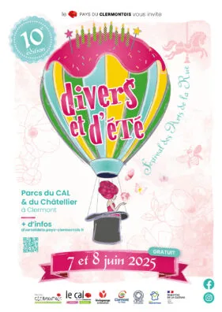
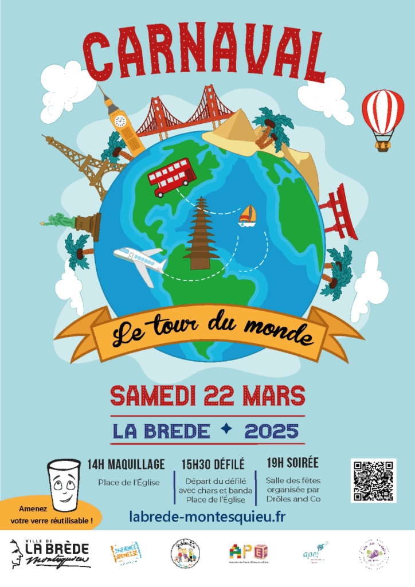
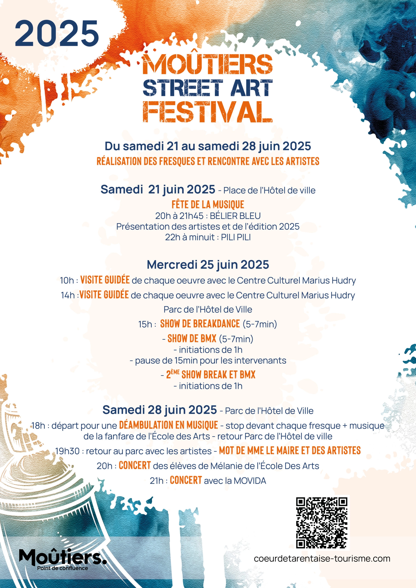
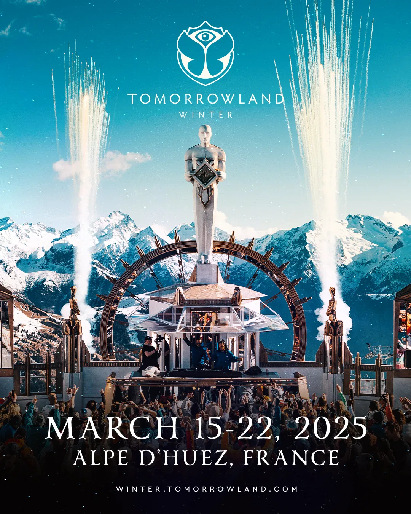
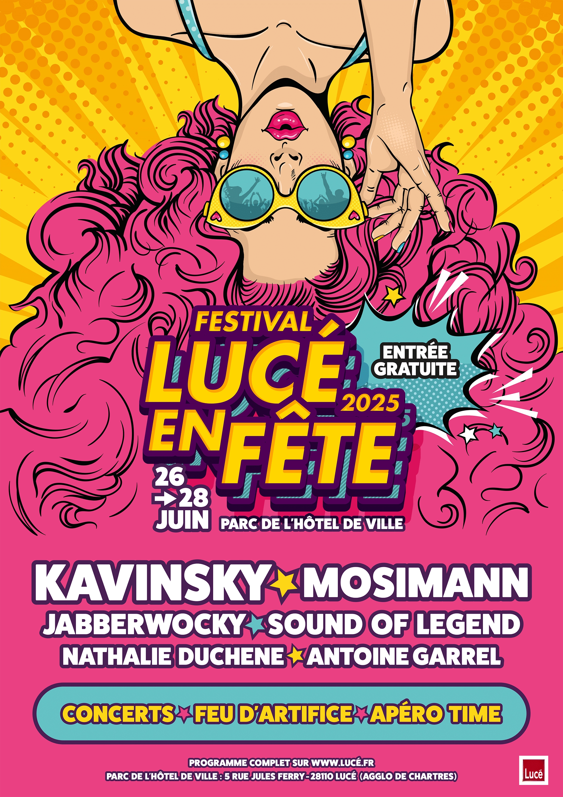
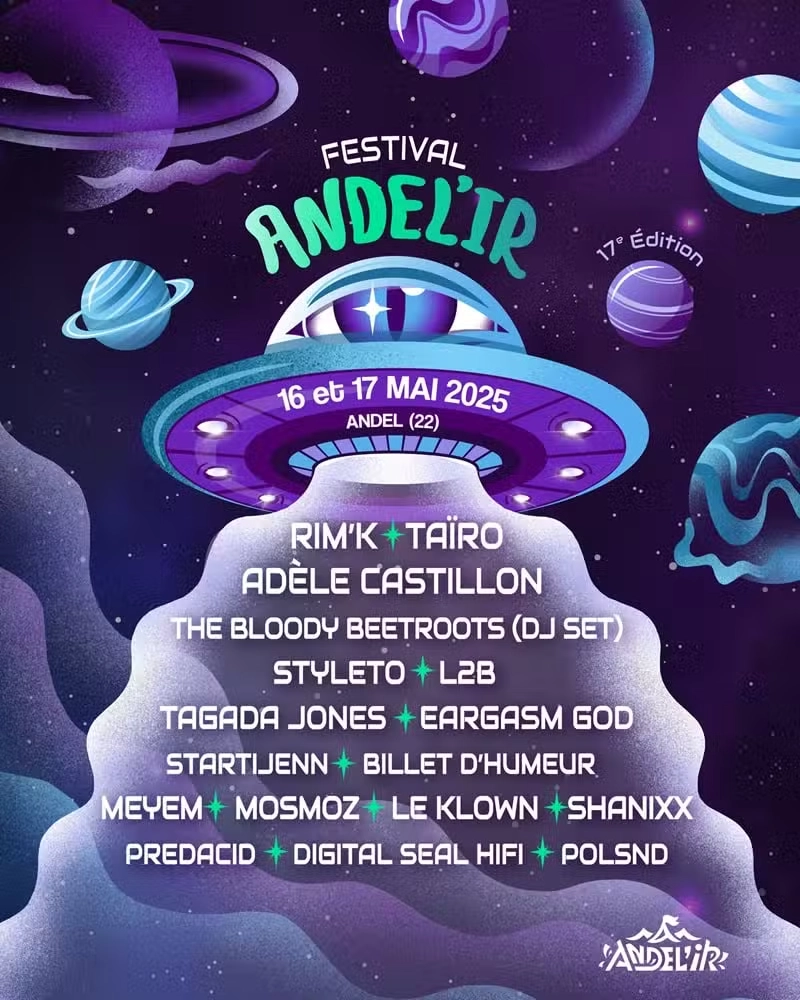
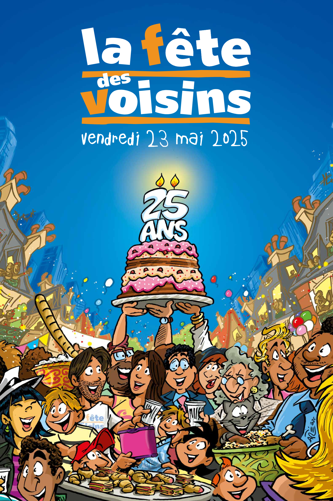
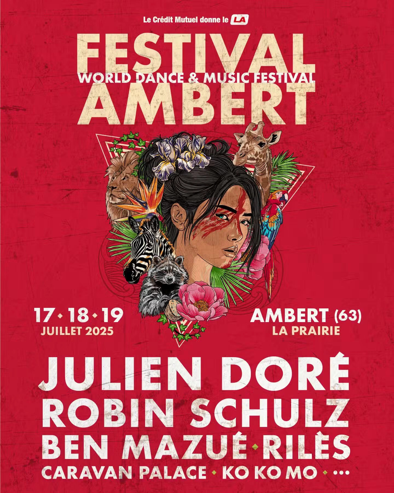
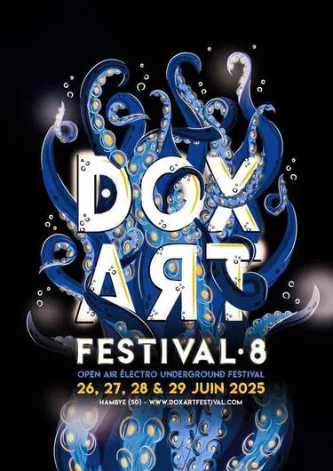

Programmes 2025
Découvrez notre symphonie d’événements en tous genres
un peu partout dans l’hexagone !
Clermont-de‑l’Oise

Un week-end festif et
gratuit à ne pas manquer
début juin dans les parcs
du CAL et du Châtellier,
combinant arts vivants,
ateliers et convivialité pour
tous les âges.
Petits et grands sont la bienvenue !
Ne manquez pas cette opportunité qui
en ravira plus d'uns !
Du 7 au 8 juin 2025.
La Brede

Un moment festif et convivial
à ne pas manquer, combinant
créativité et découverte
culturelle.
Un moment festif et convivial
à ne pas manquer, combinant
créativité et découverte
culturelle pour toute la
communauté brédoise !
Samedi 22 mars 2025, de 14 h
à environ 21 h.
Moutiers

Un week‑end gourmand à
Moutier, dans un cadre couvert,
favorisant la culture culinaire, le
partage et la convivialité, tout en
étant accessible à toute la famille.
Un week‑end gourmand à
favorisant la culture culinaire, le
partage et la convivialité, tout en
étant accessible à toute la famille.
Du vendredi 7 mars au dimanche
9 mars 2025.
Alpes d'Huez

Tomorrowland 2025 s’annonce
comme un événement
incontournable pour les fans
d’EDM, combinant musique de
haut vol, immersion artistique et
conscience écologique. Le
festival promet une expérience
féerique, rassemblant 400 000
participants de plus de 200 pays
et un lineup au sommet.
1er : du 18 au 20 juillet.
2ᵉ : du 25 au 27 juillet.
Lucé

Trois jours de festivités musicales
électro sous le thème de l’été,
avec une belle programmation de
DJ, des animations pour tous et
un feu d’artifice.
Ne manquez pas Nathalie Duchêne
et Antoine Garrel !
Idéal pour profiter d’une
ambiance estivale conviviale
en famille ou entre amis !
Jeudi 26 juin
Samedi 28 juin 2025.
Andel

Le Festival Andel’ir revient en
force en 2025 avec deux jours de
concerts éclectiques sous
chapiteaux, une thématique
spatiale immersive, et une
expérience riche entre grands
noms et découvertes.
C’est une sortie idéale pour les amateurs de
musiques actuelles et d’ambiance conviviale.
Vendredi 16 mai 2025
>amedi 17 mai 2025.
Grenoble

Un moment festif et solidaire
où les habitants d’un quartier
se réunissent, dans un hall,
une cour, un jardin ou même
la rue, autour d’un apéritif ou
d’un pique-nique partagé.
Rempli de joie, de bonne
humeur, venez (re)découvrir
vos voisins.
Venez les rencontrer !
Vendredi 23 mai 2025.
Ambert

Le World Festival Ambert
promet une immersion
planétaire — musique
contemporaine mêlée à la
world, dans un joli écrin
associé aux traditions locales.
Trois jours de fête, diversité
musicale, cadre naturel,
camping et festivaliers
enthousiastes en perspective !
Jeudi 17 au Samedi 19 juillet 2025.
Hambye

Immersion totale dans la
techno et ses déclinaisons,
dans un cadre festif, engagé,
communautaire.
Idéal pour les amateurs
d’électro underground, novices
curieux, habitants soucieux
d’inclusivité et d’écologie.
4 jours de folie et de bonne humeur
Laissez vous tenter !
Jeudi 26 au dimanche 29 juin 2025.